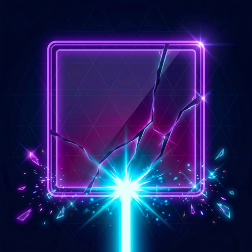

Prismfall
A neon light-beam breaker. Aim, bounce, and build a train of beams that tears the board apart.

A neon light-beam breaker. Aim, bounce, and build a train of beams that tears the board apart.
Something new is in the works.